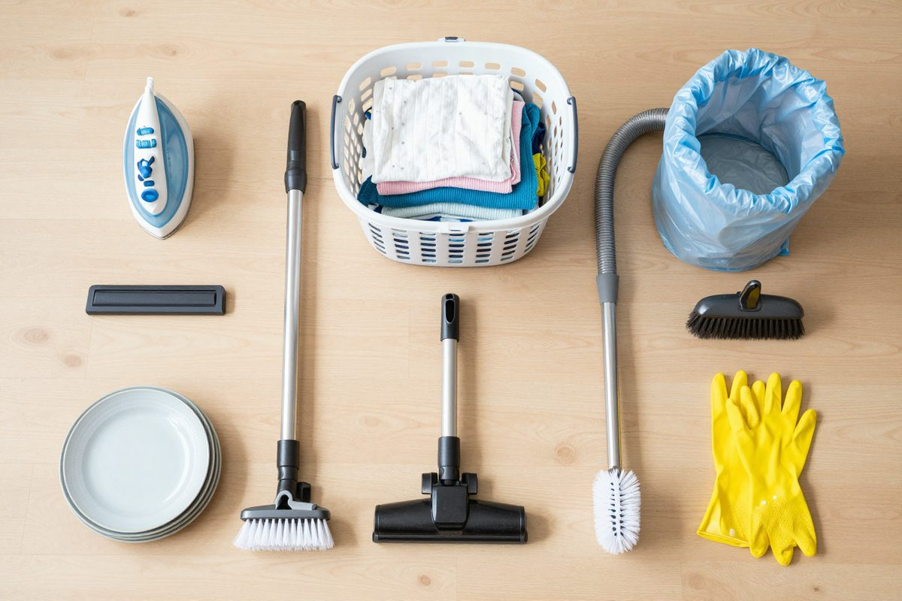
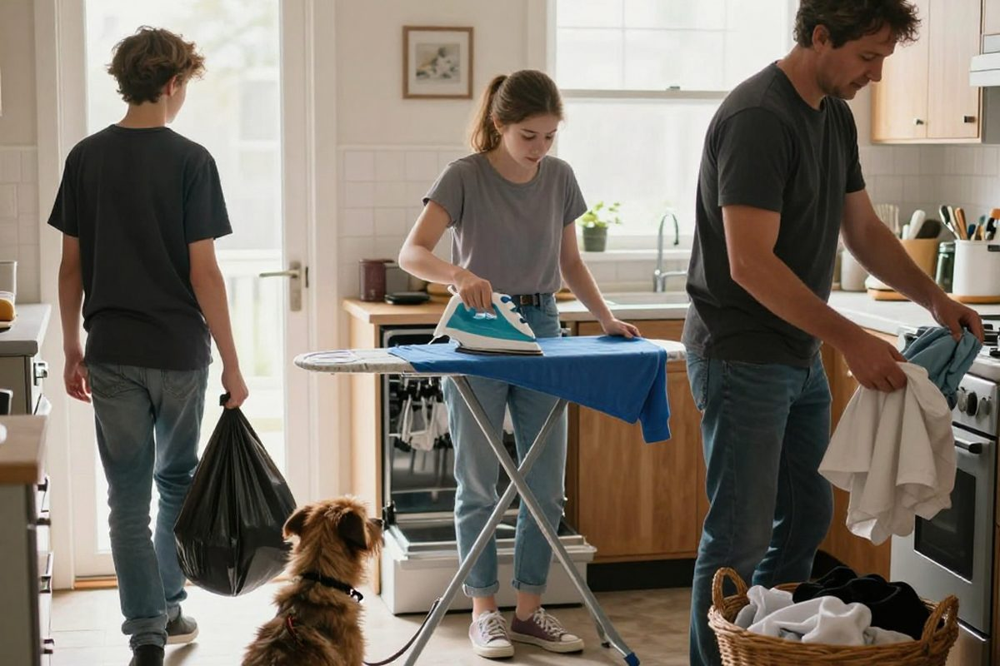

✅ Can-do: I can distinguish between words with very similar sounds.
🎧 Стратегия 1 · одна буква — разные звуки
Одна и та же буква читается по-разному: oo в school /uː/ и в look /ʊ/. Не доверяй написанию — доверяй звуку. Слушай слово целиком, а не по буквам.
✏️ Найди лишнее по звуку
В каждой группе одно слово звучит иначе. Нажми 🔊 в блоке ниже, если нужно послушать.
🔊 Послушай слова
Нажимай и сравнивай гласные.
🎧 Стратегия 2 · похожие пары
Некоторые слова звучат почти одинаково, но значат совершенно разное. Услышать разницу помогает контекст: посмотри на соседние слова и реши, что подходит по смыслу.
🔊 Минимальные пары
Слушай по очереди: men — man · cap — cup · far — for · wet — wait · live — leave · match — March
✏️ Какое слово в предложении?
🖼️ Что нужно для домашних дел

Назови предметы, потом посмотри слова ниже.
🔤 Housework
Лексика для аудирования ниже.
🎧 Аудирование

Who does what at home?
Посмотри на фото: кто что делает? Потом слушай — кликни на реплику, чтобы слушать с неё.
— / —скорость
✅ True or False
💬 Говорим
Задания к уроку 1C. Реши здесь — результат увидит учитель.
1 · Домашние дела
Впиши глагол: clean · cook · do · go · load · set · tidy · make · take
2 · Разложи по звуку
Нажми на слово, потом на нужную колонку. Ориентируйся на звук, а не на написание.
3 · Найди лишнее по гласному
4 · Какое слово подходит по смыслу?
Слова звучат похоже — помогает контекст.
5 · Послушай и отметь
Anna and the dishwasher
Кликни на реплику, чтобы слушать с неё.
— / —скорость
6 · True or False
7 · Одинаковый звук или разный?
Made for @english.with_asya · авторские материалы по программе Family and friends · 1C